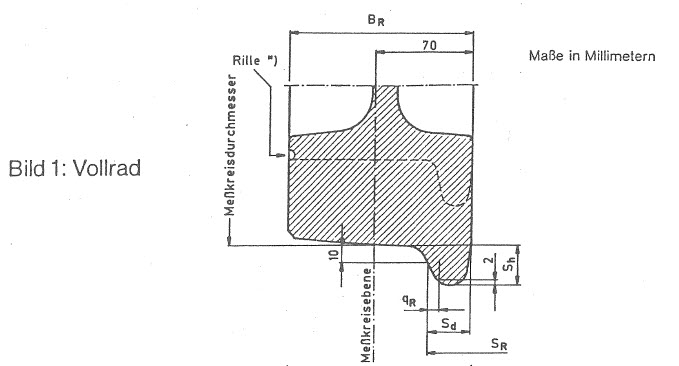
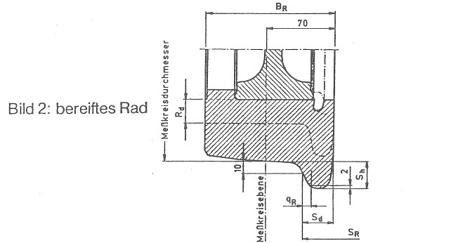
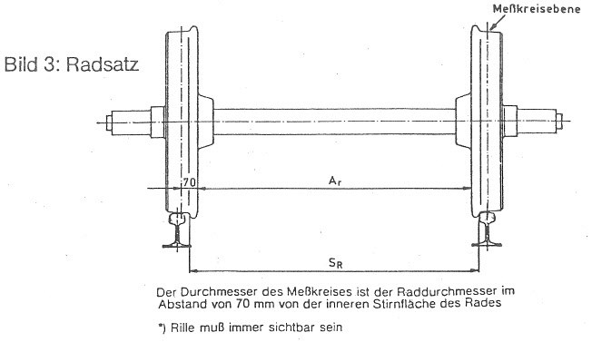

Nichtamtliches InhaltsverzeichnisEisenbahn-Bau- und Betriebsordnung (EBO)
Eisenbahn-Bau- und Betriebsordnung (EBO)
Anlage 6 (zu § 21)
Räder und Radsätze
(Fundstelle: BGBl. I 1991, Nr. 30 Anlageband S. 20 - 21)
| Bezeichnung | Meßkreisdurchmesser der Räder | Mindestmaß | Höchstmaß | ||
| Spurmaß (SR) | > 840 | 1 4101) | 1 426 | ||
| - - - - - - - - - - - - | - - - - - - - - - - | - - - - - - - - - - | |||
| 840 bis 330 | 1 4151) | 1 426 | |||
| Abstand der inneren | > 840 | 1 3572) | 1 3632) | ||
| Stirnfläche (AR) | 840 bis 330 | 1 3592) | 1 3632) | ||
| Radreifen-/Radkranzbreite (BR) | ≥ 330 | 1303) | 1334) | 150 | 1404) |
| Spurkranzdicke (Sd) | > 840 | 20 | 224) | 33 | |
| 840 bis 330 | 27,5 | 33 | |||
| Spurkranzhöhe (Sh) | > 760 | 26 | 36 | ||
| 760 bis 330 | 32 | 38 | |||
| Dicke des Radreifens in Meßkreisebene (Rd) | ≥ 330 | 25 | 355) | - | |
| Spurkranzflankenmaß (qR) | ≥ 330 | 6,56) | - | ||
- 1)
- Bei Zwischenradsätzen beträgt das Mindestmaß 1395 mm
- 2)
- Nennmaß 1360 mm
- 3)
- 133 mm, wenn Balkengleisbremsen wirksam werden sollen
- 4)
- Fahrzeuge im grenzüberschreitenden Verkehr
- 5)
- Reisezugwagen im grenzüberschreitenden Verkehr
- 6)
- Maß zur Beurteilung der Spurkranzflankenabnutzung
 |
 |
 |